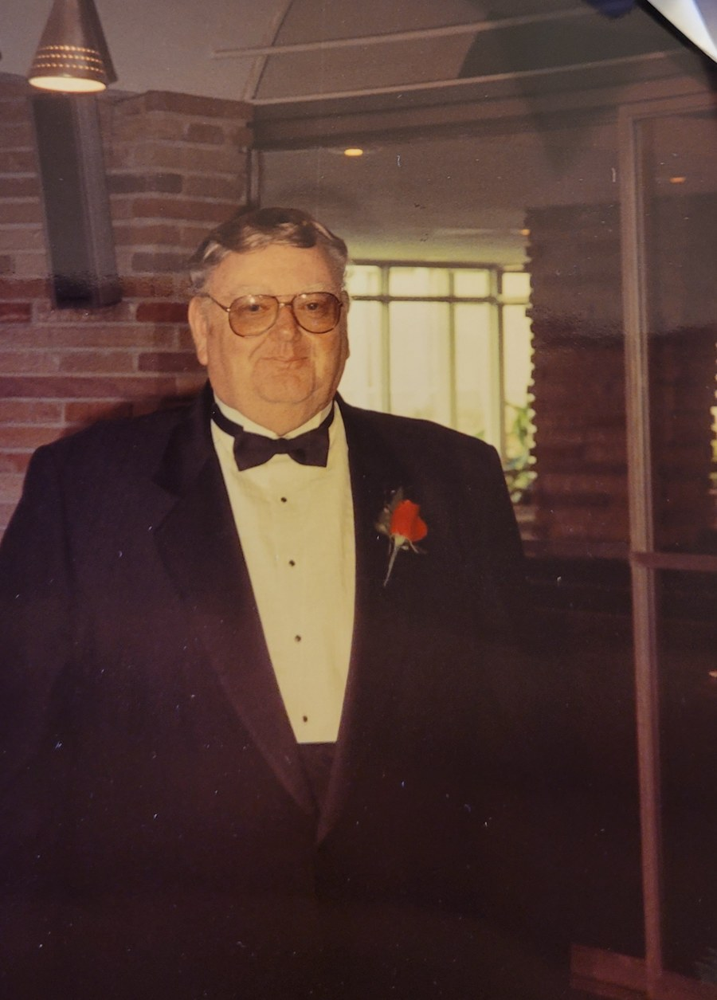
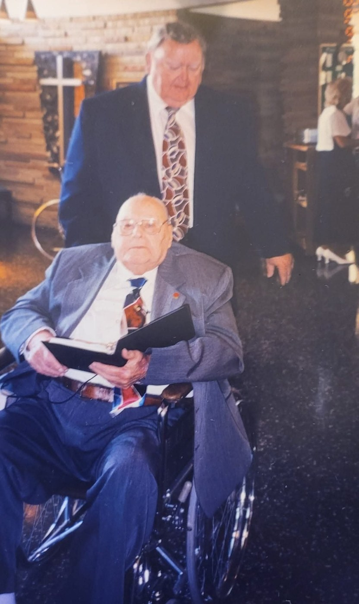

James Thomas "Tom" McGregor
Born 22 Dec 1936 or 1937 · died 26 Jan 2022
Quick Facts
Immediate Family
Spouses
- Ruth Laverne McKinney (married 10 July 1976)
Children
- Susan Ruth Shamblen (born 25 November 1960; stepdaughter)
- Tricia Marie Shamblen (22 April 1965 – 2016; stepdaughter)
Siblings
- William Clarence “Bill” McGregor (14 April 1936 – 2 June 2021)
- Wayne Martin McGregor
On Family Tree Sites
Couple Folder
Life Timeline
1936 / 1937
Birth certificate records 22 December 1936, Benton, Kentucky (age 85 at death); voter registration and family tree give 22 December 1937. Birth-year conflict unresolved.
Childhood
Raised in Kentucky with his brothers Bill and Wayne
Working years
Worked for the U.S. Post Office
1976 · age 38
Married Ruth Laverne McKinney, 10 July 1976, in the garden at Kenwood Baptist Church, Cincinnati; became stepfather to her daughters Susan and Tricia
1976 · age 38
Moved with Ruth and the girls to a house in Madeira, Ohio, that same month
2018 · age 80
Widowed; Ruth died at home in Madeira, 7 July 2018
2022 · age 84
Died 26 January 2022 at Hospice of Cincinnati, Blue Ash, Ohio; cremated at Tufts Schildmeyer Crematory, Goshen, Ohio
Life Story
James Thomas McGregor, known as Tom, was the son of Rev. James William McGregor and Marye Elizabeth Hooper, “Mamaw and Papaw” to the grandchildren. The Ohio death certificate gives his birth as 22 December 1936 in Benton, Kentucky (age 85); voter registration and family-tree records give 22 December 1937. The exact birth year remains unresolved. He was raised in Kentucky with his brothers William Clarence, called Bill, and Wayne Martin. Wayne later lived in Germany.
His parents, proud Kentuckians, later settled in Harrison, Ohio; family trees say they are buried there (UNPROVED). For a time they lived in a renovated one-room schoolhouse with a garden of about a quarter acre, and the grandchildren worked that garden, picked sweet berries, and pulled peanuts straight out of the ground. The family visited Bill and his son in Harrison all the time.
Tom worked at the Post Office, and he told stories of his walks and routes. Every Sunday he and Ruth were at Kenwood Baptist Church, where Tom counted the money after church with whoever else was on counting duty. Among his favorite church friends were Jim and Pat Crabtree, Tennesseans from the Morgan County area, who helped the family over the years. Ruth was close friends with Edith Lindner, and Ruth and Tom went to the Lindners' parties often; Tom told of a dinner party at the Lindners' house with President Bush, and said it was not the only president, senator or congressman they met there.
Tom married Ruth Laverne McKinney on 10 July 1976 in the garden at Kenwood Baptist Church. Ruth had been widowed in 1968 with two young daughters. When Tom married Ruth, he did not just take a wife: he stepped up to become a father to Susan and Tricia. He loved Ruth completely, and he chose to love and protect her daughters as if they were his very own blood. That same month the family moved to a house in Madeira.
When the next generation arrived, Tom stepped into the grandfather's role with the same open arms, the steady, protective patriarch the family looked up to. He always said he was too young to be called Grandpa; he wasn't a grandpa, he just married a grandma. The grandkids called him Tommy. Later in life he worked on his family tree on Geni. He was a steady presence in the family for the rest of Ruth's life, and after her death in 2018 he remained close to the family.
In early 2022 his health failed. He died on 26 January 2022 at Hospice of Cincinnati in Blue Ash, Ohio. He was cremated at Tufts Schildmeyer Crematory in Goshen, Ohio, and the family holds his ashes. No obituary has been found.
Photo Gallery


Sources and Evidence
- Geni profile for James Thomas McGregor, read 2026-10-10 — birth 22 December 1937, Benton, Kentucky; parents James William McGregor and Marye Elizabeth Hooper; brothers William Clarence and Wayne Martin
- William C. McGregor obituary, Brater Winter Funeral Home, Harrison, Ohio, 2 June 2021 — names his surviving brothers James Thomas McGregor and Wayne Martin McGregor, sons of James W. and Marye (Hooper) McGregor
- Ohio Certificate of Death, State File No. 2022013320 (private family papers): James Thomas McGregor; born 22 December 1936 in Benton, Kentucky; age 85; died 26 January 2022 at Hospice of Cincinnati, Blue Ash, Hamilton County; resident of Madeira; widowed; father James McGregor; mother Marye Hooper; cremation at Tufts Schildmeyer Crematory, Goshen, Ohio. This birth year conflicts with the voter registration and family-tree date 22 December 1937; the certificate records its own statement, while the actual birth year remains unresolved. ( record)
- Tufts Schildmeyer Crematory, Certificate of Cremation for James Thomas McGregor (private family papers); dated "January 28, 2021" (the recorded date is inconsistent with the death certificate’s 26 January 2022 death date; preserve as written, likely clerical error)
- Family tree on Ancestry (Shamblen/McKinney Family Tree; no sources attached): marriage to Ruth 10 July 1976; birth 22 December 1937, Benton, Kentucky; died 2022
- Ohio voter registration: James T. McGregor, born 22 December 1937, Madeira, Hamilton County
- Will of James Thomas McGregor, 2020 (private family papers): a resident of Hamilton County, Ohio; states he had no children of his own and names his stepdaughter
Grades: an original record says it · several records point to it · the family's own telling · (UNPROVED) a lead, not proved.
Research Notes and Open Questions
- Birth year conflict: the Ohio death certificate records 22 December 1936 in Benton, Kentucky and age 85; Ohio voter registration and family-tree records say 22 December 1937. Keep both source-specific dates; no record yet resolves the conflict.
- No obituary found in free sources; the family may not have published one.
- Find a record of the 1976 marriage to Ruth (Hamilton County Probate Court marriage index).
- Was Tom married before he married Ruth? No record found yet.
DNA
No DNA matches linked yet.